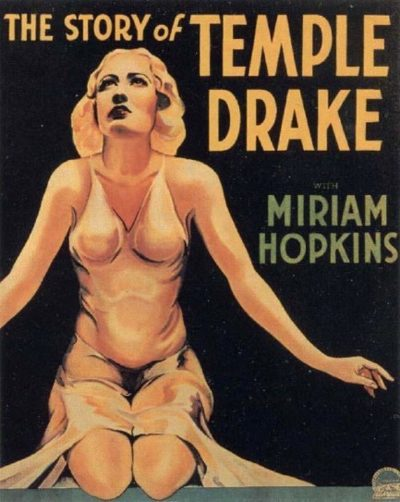

The Story of Temple Drake

Starring: Miriam Hopkins, Jack La Rue, William Gargan
Director: Stephen Roberts
Writer: William Faulkner
Producer: Benjamin Glazer
The Story of Temple Drake is a 1933 American pre-Code drama film directed by Stephen Roberts and starring Miriam Hopkins and Jack La Rue. It tells the story of Temple Drake, a reckless woman in the American South who falls into the hands of a brutal gangster and rapist. It was adapted from the highly controversial 1931 novel Sanctuary by William Faulkner.
Trivia
- In 1932, Paramount Pictures acquired the rights to the film's basis, the controversial novel Sanctuary (1931) by William Faulkner, for $6,000.
- Faulkner's novel dealt with a young Southern debutante held captive by a gang member and rapist.
- As the public felt the novel had a racy reputation, the film received a new title as the plot had been made more mild and to avoid associating it with the source work.
Filming Locations
- Principal photography of The Story of Temple Drake began in mid-February 1933 on the Paramount Studio lot in Los Angeles, California.
Previous Showings
1 Run • 1 Festival
All runs on record (1):
- March 19 - 20, 2003Film Noir and Pre-Codew/ Three on a Match